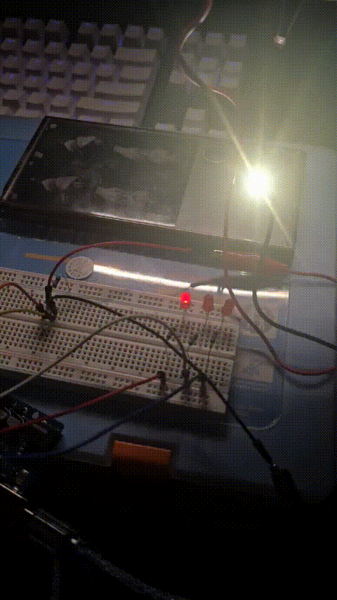
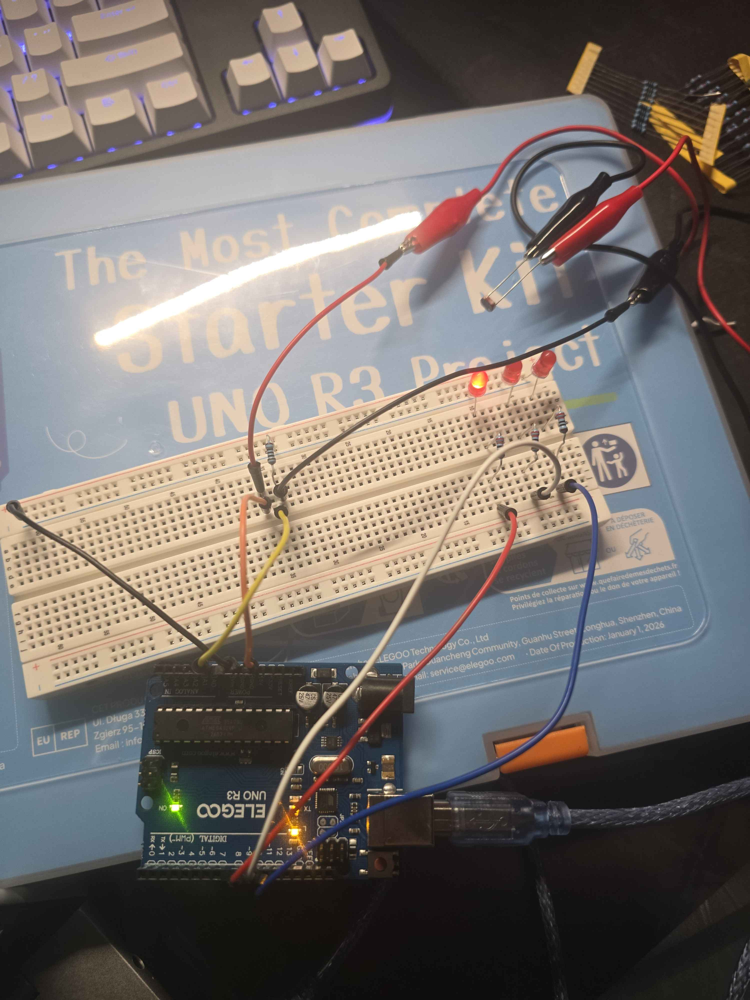
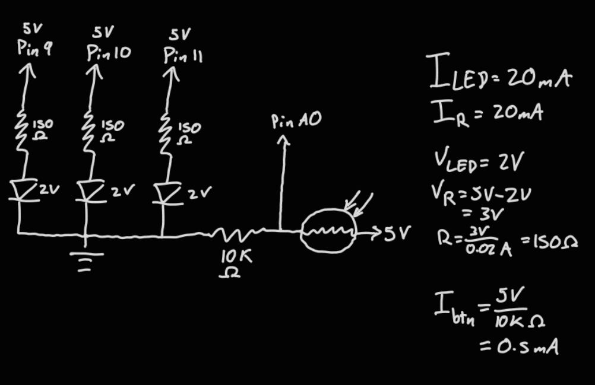
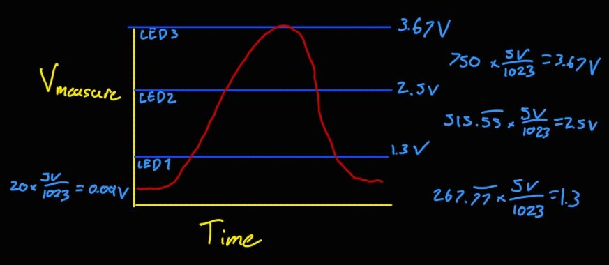

Code Chunk
void setup() {
// sets up serial communication.
Serial.begin(9600);
// sets pin A0 to input for photoresistor.
pinMode(A0, INPUT);
// sets pin 11 as output for LED.
pinMode(11, OUTPUT);
// sets pin 10 as output for LED.
pinMode(10, OUTPUT);
// sets pin 9 as output for LED.
pinMode(9, OUTPUT);
}
void loop() {
// Assigns values read from A0 to variable.
int sensorValue = analogRead(A0);
// Constrains values from sensorValue variable between 20 and 750.
int sensVal = constrain(sensorValue, 20, 750);
// Converts values from sensVal to 0 to 255 to read as outputs for LED.
int outputValue = map(sensVal, 20, 750, 0, 255);
// Runs the following code if outputValue reads below 85
if (outputValue == 85) {
// Turns pin 9/LED 1 on at outputValue brightness.
analogWrite(9, outputValue);
// Ensures pin 10 is off.
analogWrite(10, 0);
// Ensures pin 11 is off.
analogWrite(11, 0);
// Runs the following code if outputValue reads from 85 to 169
} else if (outputValue == 85 && outputValue < 170) {
// Turns pin 9/LED 1 on at outputValue brightness.
analogWrite(9, outputValue);
// Turns pin 10/LED 2 on at outputValue brightness.
analogWrite(10, outputValue);
// Ensures pin 11 is off.
analogWrite(11, 0);
// Runs the following code if outputValue reads from 170 to 255
} else if (outputValue >= 170 && outputValue <= 255) {
// Turns pin 9/LED 1 on at outputValue brightness.
analogWrite(9, outputValue);
// Turns pin 10/LED 2 on at outputValue brightness.
analogWrite(10, outputValue);
// Turns pin 11/LED 3 on at outputValue brightness.
analogWrite(11, outputValue);
}
// Values were chosen as there were three LEDs set up, and divided the output value range equally by three.
// Prints the sensor value in the Serial Monitor to observe the sensor values.
Serial.println(sensorValue);
// Delays each sensor value print.
delay(100);
}
Questions:
1: In your voltage divider, can the variable resistor be either R1 or R2 or does it need to be one or the other?
Justify your answer with example calculations.
The variable resistor can be either R1 or R2. The voltage divider formula is Vmeasuer = Vin x R2/(R1+R2). If the photoresistor is R1, then we would get:
Bright: 5V x 10k ohm / (1k ohm + 10k ohm) = 4.55V
Medium: 5V x 10k ohm / (20k ohm + 10k ohm) = 1.67V
Dark: 5V x 10k ohm / (100k ohm + 10k ohm) = 0.45V
If we were to put the photoresistor as R2, then we would get:
Bright: 5V x 1k ohm / (10k ohm + 1k ohm) = 0.45V
Medium: 5V x 20k ohm / (10k ohm + 20k ohm) = 3.33V
Dark: 5V x 100k ohm / (10k ohm + 100k ohm) = 4.55V
Both produce the same range of voltages, but in different directions. In my circuit,
I have it set up witht he photoresistor as R1, so that a brighter light produces a higher voltage. If I had put it as R2, my circuit would function in reverse, where
The the brigher the light, the dimmer the LED are, and in a darker environment, the LEDs will shine brighter.
2: Draw a graph where the x-axis is time and the y-axis is voltage.
Plot the voltage at V-measure (where your pin is reading the voltage) of your voltage divider of your shared gif/video

3: AnalogWrite and analogRead are respectively 8-bit and 10-bit values.
Imagine you had 10-bit PWM and a 16-bit analog-to-digital converter instead.
How would this change your map() code? Explain your answer.
The analog-to-digital converter 10 bit range is 0 to 1023. A 16 bit range would be 0 to 65535. The PWM range for 8 bit is 0 to 255, and 10 bit is 0 to 1023.
If I were to use a 10 bit PWM and 16 bit analog-to-digital in my code, map() would look like
int outputValue = map(sensVal, 0, 65535, 0, 1023)